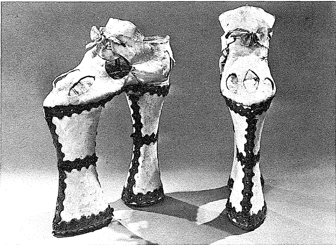

Elbise tarihi, göründüğünden daha az fıkra konusudur. Tüm sorunları ortaya çıkartmaktadır: hammaddeye, üretim süreçlerine, maliyetlere, kültürel sabitelere, modalara, toplumsal zıtlıkları inatla işaret etmektedir. Demek ki israfı önlemeye ilişkin yasalar, hükümetlerin bilgeliğini, ama bundan da fazlası, toplumun üst sınıflarının yeni zenginler tarafından taklid edildiklerinde, buna karşı duydukları öfkeyi dile getirmektedirler. Paris burjuvazisine mensup kadınlar ve kızlar ipekli mi giyinmeye başladılar, ne IV. Henri, ne de soylular buna razı olurlar. Fakat hiçkimse sonradan görmelerin yükselme tutkusuna veya Batı'da en azından toplumsal mertebenin göstergesi olan elbiselerin giyilmesine, asla engel olamamıştır. Hükümetler büyük senyörlerin gösterişe yönelik lükslerini, Venedik'te lohusaların olağanüstü şatafatlarını veya Napoli'de gömülme törenlerinin bahane oluşturduğu sergilemeleri de asla önleyememişlerdir.
En küçük dünyalarda da durum aynıdır. Valenciennes yakınlarındaki küçük Flandre köyü Rumegies'de, 1696'da, günlük tutan köy papazının demesine göre, zengin köylüler her şeylerini elbise için feda etmektedirler, “genç erkekler simli veya yaldızlı sırmalı şapkalarıyla, genç kızlar bir ayak yüksekliğindeki saç tuvaletleri ve buna uygun diğer elbiseleriyle...”. İşte “işitilmedik bir saygısızlıkla her pazar meyhanelere” gitmektedirler. Fakat günler geçmekte ve aynı papaz bize şunları söylemektedir: “kilise veya meyhanede oldukları pazar günü hariç tutulacak olursa, bunlar (zenginler veya fakirler) öylesine bir uygunsuzluk içindedirler ki, kızlar erkeklere, erkekler kızlara tensel isteklerde ilaç olmaktadırlar”. İşte işleri düzene sokan, onları gündelik dekorun içine yerleştiren şey. Mme. de Sevigne yarı beğeni, yan kızgınlık içinde, Haziran 1680'de “ipek üzerine Hollanda yünlüsünden dikilme ve yırtmaçlı kolları olan bir elbise giymiş olan Bodegatlı güzel bir çiftçi kızını kabul etmiştir”, heyhat bu kız ona 8.000 livre borçludur. Bu bir istisnadır, tıpkı 1680'de bir Alman köyünde patronun verdiği ziyafeti anlatan tablodaki köylülerin, kırmalı yakalık takmalarının da bir istisna olması gibi. Olağan durumda herkes yalınayak, veya hemen hemen yalınayak dolaşmakta ve, kem pazarlarında bir bakış, burjuvalar ile halktan insanları ayırmaya yetmektedir.
Eğer toplum aşağı yukarı sabit olarak kalsaydı, her şey daha az değişken olurdu. Ve bu, yerli yerinde olan hiyerarşilerin tepesine varana kadar olan kesimlerde sıklıkla rastlanan durumdur. Çin'de mandarin kıyafetleri XV. yüzyıldan iyice önce, 1421'de yeni başkent olan Pekin'den, Seçuan ve Yunnan gibi öncü eyaletlere varana kadar aynıdır. Ve peder de Las Cortes'in 1626'da resmettiği bu altın işlemeli ipek elbise, birçok XVIII. yüzyıl gravürünün “çeşitli renklerde ipek çizmelerle” birlikte gösterdiği elbiselerin aynıdır. Mandarinler evlerinde basit pamuklu kıyafetler giymektedirler. Toplumsal maske ve kişilerinin hakikileştirilmesi olan bu parlak elbiseye, görevleri esnasında bürünmektedirler. Aslında hemen hemen hareketsiz olan bir toplumda, bu maske yüzyıllar boyunca hiç değişmeyecektir. Moğol fethinin 1644'den itibaren ortaya çıkardığı alt-üst oluş bile, eski dengeyi bozamayacaktır -veya çok az bozacaktır-. Yeni efendiler uyruklarına saçların kazınmasını dayatmışlar (bir perçem hariç) ve eskinin merasim elbisesini değiştirmişlerdir. Hepsi bundan ibaret kalmıştır, sonuçta pek fazla bir şey değil. Bir seyyah 1793'te “Çin'de elbiselerin biçimi moda veya kapris nedenleriyle nadiren değişmektedir. Bir insanın mertebesine veyahut da mevsime göre giydiği kıyafetler her zaman aynı şekildedir. Kadınların bile, çiçek düzenlemesi veyahut da başlarının üzerine koydukları diğer süsler hariç, hiçbir zaman yeni modaları olmamaktadır” diye kaydetmektedir. Japonya da, herhalde Hideyoşi'nin sert tepkisinden sonra, kendine rağmen tutucudur. İşte, bugünkü kimonodan pek farklı olmayan, ev kıyafeti kimono'ya ve sokağa çıkıldığında giyilen, sırtı resimli deri bir elbise olan jinbaori'ye yüzyıllarca sadık kalmıştır.
Bu gibi toplumlarda genel kural; değişme ancak, tüm toplumsal düzeni etkileyen büyük siyasal alt-üst oluşların teşvikiyle olabilmektedir. Müslümanlar tarafından hemen hemen fethedilmiş olan Hindistan'da, galiplerin, yani Moğolların kıyafeti (pijama ve şapkan), en azından zenginler için kural haline gelmiştir. “Tüm Rajput hükümdarlarının portreleri (tek bir istisnayla) bize bu elbiseleri saray kıyafeti olarak göstermektedirler; bu, Hindu yüksek soyluluğunun Moğol egemenlerin adet ve tavırların genel olarak kabul ettiklerinin tartışılmaz kanıtıdır”. Aynı farkına varış Türk imparatorluğu için de söz konusudur. Osmanlı sultanlarının güç ve etkilerinin hissedildiği her yerde, kıyafetleri de kendini yüksek sınıflara dayatmaktadır; uzak Cezayir'de olduğu gibi, Türk modasının yerini ancak XVIII. yüzyılda ve hem de tam olmadan Fransız modasına terkedeceği hıristiyan Polonya'da da. Bütün bu taklitler, sonradan yüzyıllar boyunca hiçbir değişime uğramamışlardır, çünkü model sabit kalmıştır. Mouradj d'Ohsson, 1711 'de yayınlanan Osmanlı imparatorluğunun Genel Tablosu adlı kitabında “Avrupalı kadınları tiranca yöneten modalar, Doğu'da kadın cinsini hiç harekete geçirememektedir: burada adeta hep aynı saç biçimi, aynı elbise kesimleri, aynı kumaş cinsleri vardır”. 1516'dan itibaren her halükârda Türk haline gelen Cezayir'de, kadın modası 1830'a kadar olan üç yüzyıl boyunca çok az değişmiştir. P. Haedo adlı bir esire borçlu olunan, 1580'lere doğru tarihlenen kesin bir tasvir “1830 tarihli gravürleri yorumlamak üzere, çok az bir düzeltmeyle kullanılabilir”.
Öyle olsaydı, ortaya sorun bile çıkmazdı. Her şey hareketsiz kalırdı. Zenginlik yoksa, hareket serbestliği ve mümkün değişmeler de yoktur. Modadan haberi olmamak, nerede olurlarsa olsunlar, fakirlerin payına düşen şeydir. Elbiseleri ne kadar güzel veya aşınmış olursa olsun, neyseler o olarak kalacaklardır. Güzel olanı bayramlık elbisedir; bu atadan oğula intikal etmekte ve ulusal veya bölgesel düzeydeki sonsuz çeşitliliğe rağmen, yüzyıllar boyunca aynı kalmaktadır. Aşınmış olanı ise, gündelik iş kıyafetidir ve en az masraflı yerel kaynaklardan elde edilmekte ve ötekinden daha az değişmektedir.
Yeni İspanya'nın kızılderili kadınları, Cortes zamanında uzun pamuklu entarileri, daha sonra da, bazen işlemeli yünlü entarileri içinde neyseler, XVIII. yüzyılda da odurlar. Erkek kıyafeti kuşkusuz değişmiştir, fakat yalnızca, galibin ve misyonerlerinin eskinin çıplaklığını örten “münasip” bir kıyafeti mutlaka istedikleri ölçüde. Peru yerlileri XVIII. yüzyılda nasıl giyiniyorlarsa, bugün de öyle giyinmektedirler; lama yününden evde dokunmuş kare biçimli bir battaniye, insanın kafasını geçirmesi için ortasından delinmiş olan bu giysi pancho'dur. Hind'de de hareketsizlik vardır ve bu ezelidir: Hindu dün ve eskiden olduğu gibi, bugün de dhoti giymeye devam etmektedir. Çin'de “köylüler ve sıradan halk elbiselerini" her zaman “her renkten... pamuklu bezden yapmışlardır”; aslında bu, belinden bir kuşak bağlanan uzun bir gömlektir. Japon köylüleri 1609'da ve herhalde daha önceki yüzyıllarda da, pamuklu kumaşla kaplanmış kimonolar giymekteydiler. Volney Mısır Yolculuğu (1783) adlı kitabında, Mısırlıların kıyafetleri karşısında şaşırmaktadır: “kazınmış bir kafanın üzerine, pliler halinde sarılmış şu kumaş demeti, boyundan topuklara kadar inen ve gövdeyi giydirmekten çok örten şu uzun elbise”. Bu çok antik bir kıyafet olup, aslında XII. yüzyılda kalmış olan Memlûklarınkinden de eskidir. P. Labat'nın Kara Afrika'da tasvir ettiği müslümanların kıyafetine gelince, hemen hemen elbise diye bir şey olmadığına göre, nasıl değişebilirdi? “Bunların gömlekleri yok, bunlar vücutlarını donlarının üstünden bir kumaş parçasıyla sarıyorlar ve bellerinde bağlıyorlar; çoğu başı kabak, yalınayak dolaşıyor”.
Avrupa'nın fakirleri biraz daha örtülüdürler, ama kendilerini fanteziye daha fazla kaptırmakta değillerdir. Jean-Baptiste Say 1828'de şöyle yazmaktadır: “Türklerin ve Doğu'nun diğer halklarının sabit modasının beni hiç çekmediğini itiraf ediyorum. Aptalca despotizmlerine zaman tanıyora benzemektedirler... Bizim köylüler moda karşısında biraz Türktürler; alışılmışın kölesidirler ve XIV. Louis'nin savaşlarına ilişkin eski tablolarda, kadınlı erkekli köylülerin yalnızca keçe bir ayakkabı tabanı giydikleri ve bunun deri bir bağla tutturulduğu görülmektedir”. Daha eski bir dönem için de aynı şey düşünülebilir. Örneğin Münih Pinakotekinde yer alan ve hepsi de bir pazar yerinin kalabalığını gösteren, Pieter Aertsen'in (1508-1575) bir tablosu ile Jean Brueghel'in (1568-1625) iki tablosu karşılaştırılacak olursa, her üç tabloda da ilk bakışta mütevazi satıcılar veya balıkçılar ve müşteri olarak bulunan veya dolaşan burjuvaların farkediliyor olmasını görmek eğlendiricidir: kıyafet onları hemen farklılaştırmaktadır. Fakat ikinci olarak farkedilen şey, daha da merak uyandırıcıdır, iki ressamı ayıran yaklaşık yarım yüzyıl esnasında, burjuva kıyafeti geniş ölçüde değişmiştir: Aertsen'in resmindeki basit bir plili ekle çevrelenmiş, İspanyol tarzında yukarı kalkık yakaların yerine, Brueghel'de kadınlar ve erkeklerin taktıkları gerçek dantel yakalar geçmiştir; ancak halk kadınlarının kıyafeti (açık yaka, sıkılmış bel, iplerle gerilmiş ve büzülmüş etekliğin üzerinde önlük), tamamen aynı kalmıştır, ancak saç tuvaletinde bir fark vardır, o da herhalde yöresel bir farktır. Yukarı Jura'daki bir köyde, 1631'de dul bir kadın, kocasının vasiyetine göre “iki yıldan iki yıla bir çift ayakkabı ve bir gömlek ve üç yıldan üç yıla abadan bir elbise” alacaktır.
Aslında köylü elbisesi, görünüşte aynı kalmasına rağmen, bazı önemli ayrıntıları itibariyle gene de değişecektir. Örneğin XIII. yüzyıla doğru, Fransa'da ve Fransa dışında iç çamaşırı kullanma adeti başlayacaktır. Sardinya'da XVIII. yüzyılda, matem işareti olarak, aynı gömleği bir yıl boyunca hiç çıkartmamak kuralı vardır; bu en azından, köylünün gömleği bildiğini ve bunu değiştirmemenin bir fedakârlık olduğunu göstermektedir. Oysa çok sayıda tablodan, eskiden, XIV. yüzyılda bile zenginlerin ve fakirlerin yataklarında çıplak uyuduklarını biliyoruz.
Zaten bir XVIII. yüzyıl nüfus bilimcisi “uyuz, kellik ve pislikten kaynaklanan tüm deri hastalıkları, eskiden çamaşır kullanılmadığından, çok sık ortaya çıkarlardı” diye belirtmektedir. Tıp ve cerrahi kitaplarının kanıtladıkları üzere, bu hastalıklar fiili durumda, XVIII. yüzyılda tamamen yok olmamışlardır, ama gerilemektedirler. Aynı XVIII. yüzyıllı gözlemci, kendi döneminde köylüler arasında kaba yünlü çamaşırların genelleşmesini işaret etmektedir. “Bir Fransız köylüsü kötü giyimlidir ve çıplaklığını örten pırtılar onu mevsimlerin sertliklerine karşı iyi koruyamamaktadırlar; fakat elbise açısından durum, eskiye nazaran daha az acınacak bir haldedir. Elbise fakir için bir lüks konusu değil de, soğuğa karşı bir savunmadır: birçok köylünün elbisesi olan bez, onları yeteri kadar korumamaktadır..., fakat birkaç yıldan beri... çok iyi bir şey olarak, çok daha fazla sayıda köylü yünlü elbiseler giymeye başlamıştır: bunun kanıtlanması kolaydır, çünkü bir zamandan beri krallıkta daha fazla miktarda yünlü kumaş imal edildiği kesindir; ve bunlar hiç de ihraç edilmediklerine göre, zorunlu olarak, daha fazla sayıda Fransızın giyiminde kullanılmaktadırlar” diye yazmaktadır.
Bunlar gecikmiş, sınırlı iyileşmelerdir. Fransız köylülerinin kıyafetlerindeki dönüşüm, İngiliz köylülerininkini net bir gecikmeyle izlemiştir. Ayrıca, bu dönüşümün genel olduğunu da hemen düşünmeyelim. Devrim arefesinde bile, Chalonnais ve Bresse'de köylüler yalnızca meşe kabuğuyla “siyaha boyanmış bez giymektedirler” ve “bu uygulama o kadar yaygınlaşmıştır ki, korular bunun yüzünden gerilemişlerdir”. Zaten o sıralar “elbise Burgonya'da (köylü) bütçesinin önemli bir kalemini oluşturmamaktadır”. Aynı şekilde Almanya'da XIX. yüzyılın başında bile, köylü bez elbise giymeye devam etmektedir. 1750'de Tirol'de, ahır yemliğinin içinde gösterilen şu çobanlar, dizlerine kadar inen bez bir gömlek giymişlerdir, ama bacak ve ayakları çıplaktır, ve ayaklarında bacaklarına sarılmış bir deri bağla tutturulan basit bir tabandan başka bir şey yoktur. Zengin bir ülke sayılan Toskana'da, kır insanı XVIII. yüzyılda bile sadece evde dokunmuş kumaşlar, yani keten bezler ve yarı kenevirli, yarı yünlü (mezzelane) bezler giymektedirler”.
Şimdi kendimizi çok miktarda kaprisin içinde kaybolma tehlikesine atmadan, zenginlerin ve değişken modaların Avrupa'sına gelebiliriz. Her şeyden önce, bu kaprislerin, belki de diğerlerinin, hatta en sefillerin bile onları seyretmeleri ve çılgınlıklarında bile onları teşvik etmeleri nedeniyle, fazlasıyla gürültü çıkartan ve çalım atan az sayıda insandan başkasını kapsamadığını biliyoruz.
Bu değişme çılgınlığının, gerçekten yerleşebilme konusunda, yıl be yıl geciktiğini de biliyoruz. Venedikli bir elçi, IV. Henri'nin sarayına ilişkin olarak bunu çoktan söylemiştir bile: “Bir kişi... eğer farklı biçimlerde yirmibeş, otuz kıyafete sahip değilse zengin sayılmamaktadır, ve bunları hergün değiştirmek zorundadır”. Fakat moda yalnızca bolluk, miktar, çokluk değildir. İstenilen zamanda dönüş yapmasını bilmek de demektir. Bu mevsim, gün, saat meselesidir. Oysa moda'nın böylesine bir egemenliği dayatabilmesi, ancak 1700'den önce, tam da kelimenin bizzat kendinin, yeni anlamıyla -günceli izlemek- dünyaya yayılırken, ikinci gençliğini yaşamaya başladığı sıralarda mümkün olabilmiştir. Bu tarihlerde her şey, bugünkü anlamıyla, moda edası edinmeye başlamıştır. İşler o zamana kadar bu denli hızla değişmemişlerdi.
Gerçekten de, geçmişte uzaklara doğru gidilecek olursa, sonunda sakin sular, Hind, Çin veya İslam'ın tasvir ettiğimiz konumlarına benzeyen konumlar bulunmaktadır. Hareketsizlik kuralı tüm gücüyle yürürlüktedir, çünkü XII. yüzyılın başlarına doğru, Avrupa'daki kıyafetler bal gibi Galya-Roma çağındakiler gibi kalmışlardır: kadınlar için topuklara kadar inen, erkekler için de dizlere kadar inen entariler. Sonuç olarak hareketsizlik yüzyılları ve yüzyılları. Örneğin XII. yüzyılda erkek elbiselerinin uzaması gibi bir değişiklik meydana geldiğinde, bu şiddetle eleştirilmektedir. Orderic Vital (1075-1142), kendi fikrine göre çağının tamamen gereksiz olan kıyafet çılgınlıklarını mahkûm etmektedir: “eski adet(in), yeni icatlarla adeta tamamen alt-üst olduğu”nu ileri sürmektedir. Çok abartılmış bir ifade. Hatta Haçlı Seferlerinin etkisi bile, sanıldığından daha az olmuştur; bu seferler ipeği, kürk lüksünü Avrupa'ya getirmişler, ama XII. ve XIII. yüzyıl elbise biçimlerinde temelli bir değişiklik yapamamışlardır.
Büyük değişme, 1350'lere doğru bilgelerin, yaşlıların, gelenek savunucularının gözünde rezalet olan, erkek elbisesini aniden kısaltan değişikliktir. Guillaume de Nangis'nin eserini devam ettirenlerden biri, “bu yılın civarında, erkekler ve özellikle soylular, seyisler ve maiyetleri, bazı burjuvalar ve hizmetkârları o kadar kısa ve dar elbiseler giydiler ki, ar duygusunun saklanmasını emrettiği şeyleri farkedilir halde bıraktılar. Bu halk için çok şaşırtıcı bir şey oldu" diye yazmaktadır. Vücuda oturan bu elbise devam edecek ve erkekler artık bir daha uzun elbise bulamayacaklardır. Kadınlara gelince, bunların da üst kısmı oturarak, vücut biçimini belli etmeye başlamış ve büyük dekolteler halinde açılmıştır ki, bu da başka bir kınama konusu olmuştur.
Modanın başlangıcını, bir bakıma bu yıllara yerleştirmek mümkündür. Çünkü artık kıyafet değişikliği kuralı Avrupa'daki rolünü oynamaya başlayacaktır. Öte yandan, geleneksel elbise, kıtanın her yerinde hemen hemen aynıyken, kısa elbisenin yayılması eşitsiz bir biçimde, direnmeler ve uyarlamalarla birlikte olacak ve sonunda birbirlerini az çok etkileyen ulusal modaların oluştuğu görülecektir: bir Fransız elbisesi, bir Burgonya elbisesi, bir İtalyan elbisesi, bir İngiliz elbisesi vs. Doğu Avrupa ise, Bizans'ın çözülmesinden sonra, artan bir şekilde Türk modalarının etkisine maruz kalacaktır. Avrupa bundan sonra, oldukça sık bir şekilde, ayrıcalıklı bir bölgenin leadership'ini kabul etmeye hazır olsa bile, en azından XIX. yüzyıla kadar çok renkli olarak kalacaktır.
Böylece XVI. yüzyılda, yüksek sınıflar arasında, ilhamını İspanyollardan alan, siyah yünlü kumaştan elbise kendini dayatacaktır. Bu, Katolik Kral'ın “Dünya” imparatorluğunun siyasal önceliğinin işaretlerinden biridir. Kare biçimindeki dekoltelerinin, geniş kol ağızlarının, saç filesinin, altın ve gümüş işlemelerin, yaldızlı dibaların, kan rengi saten ve kadifelerin Avrupa'nın büyük bir bölümü için ekol oluşturduğu, Rönesans dönemi İtalyan kıyafetinin yerine İspanyol kanaatkârlığı, koyu renk yünlüler, vücuda yapışan yelekler, şişkin ayakkabılar, kısa pelerin, oymalı bir yakalık takılan çok yüksek yakalar ikâme olmuştur. XVII. yüzyılda ise, bunun tersine, Fransız işi denilen elbise, canlı renkleri olan ipeklileri, daha özgür edasıyla yavaş yavaş bu modaya üste gelecektir. Tabii ki İspanya, bu modanın cazibesine en yavaş kapılan ülke olacaktır. Barok lükse düşman olan IV. Felipe (1621-1665), aristokrasisine II. Felipe döneminden miras, ağırbaşlı bir sadeliği olan modayı dayatmıştır. Sarayda vesti do de color's karşı uzun süre engel konulmuş; yabancı kimseler saraya ancak, kurallara uygun bir şekilde “siyahlar giyinmiş olarak” kabul edilmişlerdir. O sıralar İspanyolların müttefiki olan Conde prensinin bir temsilcisi, ancak kıyafetini değiştirip, katı koyu elbiseler giyince, görüşmeye kabul edilebilmiştir. Yabancı moda İspanya'ya, hem de kalbine, yani Madrid'e, ancak IV. Felipe'nin ölümünden sonra, 1670'e doğru nüfuz edebilecek, IV. Felipe'nin piçi ikinci Avusturyalı Don Juan bu kentte bu modanın başarıya ulaşmasını sağlayacaktır. Fakat Katalonya yeni kıyafetler tarafından daha 1630'da, yani Madrid'e isyan etmesinden on yıl önce kazanılmıştır. Bu aynı tarihte, Hollanda'da stathouder'm sarayı da, karşı çıkanların hiç de ender olmamasına rağmen, kendini bu hayranlığa teslim etmişti. Rijksmuseum'da bulunan, 1642 tarihli bir portrede, Amsterdam burgmeister'ı Bicher, İspanyol tarzında, geleneksel bir elbiseyle gösterilmektedir. Kuşkusuz bu aynı zamanda bir kuşak sorunudur, çünkü D. van Santvoort tarafından yapılan 1635 tarihli bir tabloda, burgmeister Dirk Bas Jacobsz ve karısı eski modaya uygun plili yakalar ile yer alırlarken, çocukları yeni zevke göre giyinmişlerdir. İki kuşak arasındaki çatışma Milano'da da mevcuttur, fakat bunun başka bir anlamı vardır: Milano o sıralar İspanya'ya aittir ve yüzyılın ortasında yapılan bir karikatürde, geleneksel olarak giyinmiş bir İspanyol, Fransız modasını seçmiş bir Milanoluyu azarlıyorsa benzemektedir. Acaba, Fransız modasının Avrupa'da yayılmasında, İspanya'nın gerilemesinin bir ölçüsünü mü görmek gerekir?
Bu birbirini izleyen öncelikler, Hindistan'da Moğol modasının veya Osmanlı imparatorluğunda Türk modasının yayılmasına ilişkin olarak ileri sürdüğümüz açıklamayı akla getirmektedirler: Avrupa, kavgalarına rağmen veya bunların sayesinde tek ve aynı ailedir. Ne en beğenilen, zorunlu olarak en güçlüdür, ne de Fransızların sandığı gibi, en sevilen veya en incelmiş olan kuralları koymaktadır. Avrupa'nın tüm gövdesini etkileyen siyasal önceliklerin yönünün veya ağırlık merkezinin birden değişmesinin, modalar dünyasını hemen etkilemediği aşikârdır. Gecikmeler, sapmalar, boşluklar, yavaşlıklar vardır. XVII. yüzyıldan itibaren öncelikli hale gelen Fransız modası, egemenliğini ancak XVIII. yüzyılda kanıtlayabilmiştir. O sıralar İspanyolların duyulmamış bir lüks içinde yaşadıkları Peru'da bile, 1716'da insanlar “Fransız tarzına göre, çoğu zaman da (Avrupa'dan ithal edilen) garip renk karışımları içindeki ipek elbiseler giymektedirler”. Aydınlanma dönemi Avrupa'sının dört bir yanına, moda Paris'ten itibaren, çok erkenden itibaren ortaya çıkmış olan taş mankenler aracılığıyla yayılmaktadır. Bu taş mankenler, artık rakipsiz bir egemenlik sürmektedirler. XV. ve XVI. yüzyıllarda moda ve yüksek zevkin eski başkenti olan Venedik'te, en eski elbiseci dükkânlarından birinin adı Fransa Taş Bebeği, La Piavola da Franza idi ve bugün hâlâ öyle. Polonya kraliçesi (İmparatorun kızkardeşiydi) daha 1642'de, bir Ispanyol kuryesinden, eğer Alçak Ülkeler'e giderse, ona “terzisi model alabilsin diye, Fransız tarzına göre giydirilmiş bir taş bebek getirmesini” istiyordu, bu konudaki Polonya uygulaması hoşuna gitmiyordu.
Bu tek bir egemen modaya indirgenme halinin, hiçbir zaman tereddütler olmadan ilerlemediği aşikâdır. Daha önce de söylediğimiz üzere, bu konuda bir marj, fakirlerin muazzam hareketsizliği bulunmaktadır. Bir de durgun denizin üzerine çıkan yerel direnmeler, bölgesel bölünmeler vardır. Elbise tarihçilerinin umutsuzluğu, çok açıkçası, bütünsel hareketler karşısındaki sapmalar, bölünmelerden kaynaklanmaktadır. Burgonya Valoislarının sarayı, Fransız sarayının modasını izleyemeyecek kadar Almanya'ya yakın ve aynı zamanda fazlasıyla özgündür. XVI. yüzyılda bu ülkede, kadınların etek kabartma yastığının yaygınlaşması veya bundan da fazlası, kürklerin yüzyıllar boyunca heryere yayılması ortaya çıkmıştır, fakat herkes bu işi kendi tarzına göre yapmaktadır. Plili yakalık sadelikten, Isabelle Brandt'ın, Rubens'in onu kendi yanında gösterdiği tablodaki muazzam dantel yakalığa doğru değişebilir. Veya Brüksel müzesindeki tabloda, iki kızının ve ressamın birlikte görüldükleri, Cornelis tie Vos'nun karısı için de aynı şey söylenebilir.

Bir cins mimli cambaz sopası olan ve kadınların Venedik sobalılarındaki su birikintilerinden korunmak için giydikleri zocoli, bunların modası XVI. yüzyılda, bir an için Venedik dışında da yayılmıştır. Bayerisches Nationalmuseum, Münih.
1581 'in bir Mayıs akşamı, Zaragoza'ya doppo disnar, yakışıklı, yaşamaktan mutlu, alıngan, akıllı, kendilerinden memnun üç soylu, Venedikli genç yolcu gelir. Peşlerinde kadınlı erkekli bir kalabalık olduğu halde, şaraplı ekmek ayinin geçit resmi yapılmaktadır. Anlatıcı, kötü huylu bir şekilde, “suratlarını tüm renklerle boyamış çok çirkin kadınlar, garip bir şey olarak çok yüksek ayakkabılar, daha doğrusu Venedik modasına uygun zacoli ve tüm İspanya'da moda olan dantel başörtüleri giymektedirler”. Merak onları bu gösteriyi seyretmeye yöneltir. Fakat başkalarını görmek isteyen de, kendi hesabına görülmekte, (arkedilmekte, parmakla gösterilmekledir. Önlerinden geçen kadınlar ve erkekler kahkahaya boğulmakta ve onlara lâf atmaktadırlar. Bizim Francesco Contarini, “bütün bunlar, bizim İspanyol adetinin izin verdiğinden daha geniş nimplıe (dantel yakalık) takmamızdan oluyordu. Bazıları 'işte mm Hollanda kentimize gelmiş' diyorlardı (bundan tüm Hollanda bezlerini veya kumaş ve çamaşır yapımında kullanılan bezin adı olan olanda'ya (Hollanda) yönelik bir kelime oyununun varlığını anlayınız), diğer bazıları da 'ne büyük salatalar' diyorlardı. Bunlarla oldukça eğlendik”. Kendinden daha az emin olan başrahip Locatelli, 1664'te İtalya'dan Lyon'a geldiğinde, sokakta “peşinden koşan çocuklara” fazla dayanamamıştır. “Şeker ekmeğini (geniş kenarlı şapka)... renkli çorapları bırakarak, tamamen Fransız tarzına göre giyinmek zorunda kaldım.” Ne ile? Dar kenarlı “bir Zani şapkası, rahipten çok tabibe yaraşan büyük bir yakalık, kalçanın ortasına kadar inen bir cübbe, siyah çoraplar..., bağcık yerine gümüş kopçaları olan dar ayakkabılar. Bu kıyafet ile... artık rahip olduğuma inanamıyordum”.
Moda görünüşte, eylem ve kaprislerinde serbesttir. Gerçekte, yolu önceden çizilmiştir ve tercihlerinin yelpazesi, her şeye rağmen sınırlıdır.
Mekanizmalarıyla kültürel aktarımlara, en azından yayılmasının tabi olduğu kurallara bağlıdır. Ve bu cinsten her yayılma, doğası gereği yavaştır ve mekanizmalara, zorlamalara bağlıdır. İngiliz tiyatro yazarı Thomas Dekker (1572-1632), vatandaşlarının başka uluslardan aldıkları kıyafetleri hatırlatarak eğlenmektedir: “pantalon yırtmacı Danimarka'dan, yelek yakası ve beden bölümü Fransa'dan, 'kanatlar* ve dar kol ağızları İtalya'dan, kısa yelek Utrechtli bir Hollandalı perakendeciden, kocaman diz pantalonları İspanya'dan, çizmeler Polonya'dan gelmektedir”. Bu menşe şahadetnameleri zorunlu olarak doğru değildir, ama maddelerin çeşitliliği kuşkusuz öyledir ve bunlardan herkesin kabul edebileceği bir bileşim oluşturmak için birçok yıl uğraşmak gerekmiştir.
XVIII. yüzyılda her şey hızlanmakta, demek ki canlanmaktadır, fakat uçarılık, tanıkların ve aktörlerin istekle sözünü ettikleri bu kıyışız krallığın kuralı haline gelememektedir. İyi bir gözlemci, yetenekli bir gazeteci olan, ama çok büyük bir akla sahip olmayan Sebastien Mercier'yi dinleyelim, ama ona gözü kapalı inanmaksızın. 1771'de şöyle yazmaktadır: “mevsimin sertliği yüzünden, kışın yaklaşmasından endişe duyuyorum... Tüm yararsız tutkuların egemenliklerini kurdukları gürültülü ve yavan toplantılar bu mevsimde ortaya çıkmaktadır. Hoppalık zevki, modanın kurallarını dikte etmektedir. Bütün erkekler kadınlaşmış köleler haline dönüşmekte, hepsi kadın kaprisine bağımlı hale gelmektedir”. İşte “hiçbiri sürekli olmayan şu moda, fantezi, eğlence fırtınası” patlamıştır. Gene yazarımız “eğer saç kıvırma sanatı konusunda bir inceleme yazma fantezisine kapılırsam, okuyuculara kibar bir erkeğin saç kıvırmak için üç veya dört yüz yola sahip olduğunu kanıtlayarak, onları şaşkınlığa garkedebilirim” diye yazmaktadır. Bu alıntı ahlâkçı, ama her zaman eğlendirmek isteyen yazarın olağan tavrının içinde yer almaktadır. Öte yandan, döneminin kadın modasının değişimini değerlendirdiğinde, onu daha fazla ciddiye alma eğilimi doğmaktadır. “Annelerimizin” etek kabartma yastıkları, falbalalarla çentiklenmiş kumaşları diye yazmaktadır, “etek çemberleri, bazıları gerçek yakılara benzeyen şu benek bolluğu, bütün bunlar, saç tuvaletlerinin ölçüsüz yüksekliği hariç olmak üzere kayboldular: gülünçlük bu sonuncu uygulamayı tashih edemedi, fakat bu kusur zarif inşanın yapısına egemen olan zevk ve incelikle yumuşatıldı. Her şeyi almaya hazır kadınlar, bugün hiçbir zaman olmadıkları kadar iyi giyimlidirler, kıyafetlerinin uyumu hafiflik, haya, tazelik, zerafeti biraraya getirmektedir. İnce bir kumaştan (Hind kumaşı) olan bu elbiseler, altın veya gümüşün parladığı elbiselerden daha sık değişmektedir, bunlar, eğer deyim yerindeyse, çeşitli mevsimlerin çiçeklerinin ince farklarını izlemektedirler... ”.
İşte iyi bir tanıklık: moda tasfiye etmekte ve yenilemektedir. Çifte iş, öyleyse çifte zorluk demektir. Gündemdeki yenilik, nisbeten daha ucuz olan emprime Hind pamuklularıdır. Fakat bunlar da Avrupa'yı bir geceden ertesi sabaha ele geçirmemişlerdir. Ve dokumalar tarihi, konukların ilk bakışta göründüklerinden daha az özgün oldukları bu moda karşısında, her şeyin birbirine bağlı olduğunu göstermektedir.
Gerçekte moda bu kadar uçan bir şey midir? Yoksa, bizim düşündüğümüz gibi, belli bir toplum, bir ekonomi, bir uygarlık hakkında derinlemesine tanıklık yapan bir işaret midir? Bu toplum, ekonomi, uygarlığın atılından, olanakları, talepleri, yaşama sevinçleri hakkında bir tanık mıdır? Rodrigo Vivero geçici olarak Genel Kaptan olduğu Manila'dan, 1609'da Yeni İspanya'daki Acapulco'ya dönmektedir. Onu götüren büyük tekne (2000 ton) Japonya kıyılarında batar. Geminin batması, adeta hemen kazazedelerin bu adalarda sevinçle karşılanan konuklar haline dönüşmelerine yol açar. Yabancılara meraklı adalılar onları sevinçle karşılamışlar, sonra da Vivero, aslında boşuna bir şekilde, adaları Hollanda ticaretine kapatmayı, gene boşuna bir şekilde takımadaların gümüş ve bakır madenlerini daha iyi işlemek üzere Yeni İspanya'dan madenci getirtmeye teşebbüs ederek, bir cins olağanüstü elçi haline dönüşecektir. Bu sempatik kişinin akıllı ve iyi bir gözlemci olduğunu ekleyelim. Birgün Ye- do'da Şogun'un kâtibiyle dereden tepeden gevezelik etmiştir. Kâtip İspanyolların gururunu, yalnız kendi havalarında kalmalarını eleştirmiş, sonra da bunlara bağlayarak, onların giyinme biçimini gündeme getirmiştir, “kıyafetlerinin çeşitliliği, o kadar az sabit oldukları bir alandır ki, her iki yılda bir farklı giyinmektedirler”. Bu değişiklikleri, onların hafifliklerinin ve böylesine aşırılıklara izin veren yöneticilerinin zimmetine kaydetmek mümkün müdür? Ona gelince, “geleneklerin ve eski kâğıtların tanıklıklarıyla, ulusunun bin yıldan beri kıyafet değiştirmediğini” gösterecektir.
Chardin de, on yıl İran'da yaşadıktan sonra (1686), tamamen kategoriktir: “Timur’un İsfahan hâzinesinde muhafaza edilen elbiselerini gördüm; tamamen bugün yapılanlar gibi biçilmişlerdi” diye yazmaktadır. Çünkü “Doğuluların kıyafetleri hiçbir zaman moda konusu olmamakta, bunlar her zaman aynı biçimde yapılmaktadır, ve... Iranlılar... kumaşların renkleri, nüansları ve biçimleri konusunda da hiç değişken değillerdir”.
Bu içi boş işaretleri yargılamıyorum. Aslında bu basit bir rastlantı mı, bilmiyorum ama, gelecek elbiselerin renklerini, malzemesini, biçimlerini ve aynı zamanda toplumsal kategorilerin düzenini ve dünyanın haritasını değiştirecek kadar boş olan, yani geleneklerinden kopmuş toplumlara aitti. Çünkü her şey birbirine bağlıdır. Chardin bu İranlılar hakkında, “yeni icat ve keşiflere hiç düşkün değiller, gerekenler ve hayatın rahatlıkları için her şeye sahip olduklarını sanıyor ve bunlara, sarılıyorlar” demekte değil midir? Geleneğin erdemi ve kaprisleri... Belki de kapıları, her türlü ilerlemenin aleti olan yenileşmeye açabilmek için; elbiselere, ayakkabıların ve saçların biçimine kadar uzanan bir kaygı gerekmektedir? Belki de aynı zamanda, her türden yenileştirici hareketi besleyebilecek belli bir refah gerekmektedir?
Fakat modanın başka anlamları da vardır. Ben her zaman modanın büyük ölçüde, ayrıcalıkların, onları izleyen kalabalıktan farklılaşma, aralarına bir engel koyma arzusundan kaynaklandığını düşündüm. Paris'ten geçen bir SicilyalInın 1714'de dediği gibi “soyluları altın işlemeli elbiseleri sıradan insanların sırtında görmekten daha fazla nefret ettiren bir şey yoktur”. Demek ki yeni “altın işlemeli elbiseler” veya her ne olursa olsun, yeni farklılık işaretleri icad etmek gerekmektedir ve her şeyin değiştiği” ve hem erkek, hem de kadın burjuva modalarının kaliteli insanların benimsedikleriyle karıştığı”nın (1779) görüldüğü her seferinde umutsuzluğa kapılarak. Açıkçası takipçilerin ve taklitçilerin baskısı, koşuyu hızlandırmaktan başka bir şey yapmamaktadır. Fakat eğer böyleyse, bunun nedeni refahın belli sayıda zengini ayrıcalıklı kılması, öne çıkartmasıdır. Toplumsal bir yükselme, belli bir refah düzeyinin kanıtlanması söz konusudur. Maddi gelişme vardır; o olmazsa hiçbir şey bu kadar hızlı değişemez.
Zaten moda, ticari dünya tarafından bilinçli bir şekilde kullanılmaktadır. Nicholas Barbon 1690’da methiyesini düzmüştür: “Fashion or alteration of dress... is the spirit and life of trade"; “ticaretin büyük gövdesi onun sayesinde hareket halinde kalmakta” ve insan “elbiselerinin sonbaharını asla göremeden” sürekli bir ilkbahar halinde yaşamaktadır. Lyon ipeklileri XVIII. yüzyılda Fransız modasının Uranlığından, kendi ürünlerini dışarıda dayatmak ve rekabeti devre dışı bırakmak üzere yararlanmıştır. Lyon ipeklikleri harikadır, ama İtalyan zenaatkârlar, özellikle örnek yollaması uygulamasının yaygınlaşmasından sonra, onları kolaylıkla taklid etmektedirler. Lyon ipeklileri bu duruma karşılık bulmuşlardır: “ipek ressamları” denilen ve modelleri her yıl baştan aşağı yenileyen desinatörler beslemektedirler. Taklitler piyasaya çıktıklarında demode olmuşlardır bile. Carlo Poni, bu durum karşısında Lyonluların taktik kurnazlıkları konusunda hiçbir kuşkuya yer bırakmayacak mektuplaşmaları yayınlamıştır.
Moda aynı zamanda, eskiyi yerinden ederek yeni bir dilin, her kuşağın bir öncekini yadsıyacağı ve ondan farklılaşacağı (eğer kuşak çatışmasının varolduğu bir toplumsa) bir biçim aranmasıdır da. 1714 tarihli bir metin, “terziler dikmekten çok, icad etme sıkıntısı içindeler” demektedir. Fakat Avrupa'da sorun, işte tam da budur, yani icad etmek, yerleşik dilleri sarsalamak. Emin olunan değerler, Kilise, Krallık, hiç değilse görünüşte olmak üzere, aynı çehreyi korumaya gayret göstermektedirler; din adamları Orta Çağ kadınlarının elbisesini giymektedirler; benediktinler, dominikenler, fransiskenler çok eski kıyafetlerine sadıktırlar. İngiliz krallığının törensel kıyafetleri, en azından İki Gül Savaşına kadar geri gitmektedir. Bu, akıntıya karşı bir oyundur. Sebastien Mercier burada yanılmamakta ve şöyle yazmaktadır (1782): “Kilise hizmetkârlarını görünce, kendi kendime, VI. Charles zamanında herkes böyle giyinmekteydi diyorum”.
Bir sonuca varmadan önce, elbise tarihi bizi dokuma ve kumaş tarihine, üretim ve mübadelelerin coğrafyasına, dokumacıların yavaş çalışmalarına, hammadde kıtlığının yol açtığı düzenli bunalımlara götürmelidir. Avrupa yün, pamuk ve ipekten; Çin pamuktan; Hind ve İslam alemi ince yünden yoksundurlar; Kara Afrika Atlantik veya Hind Okyanusu kıyılarında, altın veya köle pahasına yabancı kumaşlar almaktadır. O dönemde fakir halkların lüks alımlannın karşılığını ödeme biçimleri budur.
Tabii ki üretim alanlarının belli bir sabitliği söz konusudur. Böylece, Amerika'nın kendine özgü deneyi ve çok ince vikunya ve çok kaba lama yünleri bir kenara bırakıldığında, XV. ile XVIII. yüzyıllar arasında oldukça az hareketli bir yünlü alanı belirmektedir. Burası Akdeniz, Avrupa, İran, Kuzey Hindistan, kuzeyin soğuk Çin'ini kapsamaktadır.
Demek ki Çin'in koyunları vardır “ve yün burada harcı alemdir ve ucuzdur”. Ancak, “Avrupa modasına uygun çuha yapmayı hiç bilmemektedirler” ve asla satın almamalarına rağmen İngiliz çuhalarını çok beğenmektedirler, çünkü bunlar Çin'de “en güzel ipekli kumaşlardan bile daha pahalıdırlar”. Çinlilerin kalın yünlüleri kabadır, bir cins abadır. Ancak, “çok ince ve çok değerli olup... olağan olarak yaşlılar ve önemli kişilerin kışın giydikleri” bazı serjler yapmaktadırlar. Bunun anlamı, Çinlilerin yalnızca seçmekte zorlandıklarıdır. İpekleri, pamuklan, genel olmasa bile, kolay işlenen iki veya üç tane bitkisel elyaftan kumaşları vardır. Ve kış gelince, kuzeyde mandarinler ve senyörler samur kürklere bürünmekte ve fakirler bile koyun pöstekilerine sarınmaktadırlar.
Dokumalar, kültürel malların en mütevazileri olarak, yer değiştirmeyi, yeni bölgelere yerleşmeyi başarmaktadırlar. Yün kendine en uygun yeri, XIX. yüzyılda Avustralya'da bulacaktır. İpek Avrupa alemine, herhalde Traianus döneminde (52- 117) ulaşmıştır; pamuk XII. yüzyıldan itibaren Hindistan'dan ayrılarak Çin'i istila etmiştir; bundan daha önce, X. yüzyıla doğru, Arap dünyası menzili aracılığıyla Akdeniz'e ulaşmıştır.
Bu yolculuklardan en parlağı ipeğinkidir. Kıskançlıkla saklanan ipek, Çin'den Akdeniz'e gelebilmek için yüzyıllar harcayacaktır. Çinliler bu konuda, başlangıçta hiçbir iyi niyet göstermemişler, Çin ile Bizans'ı birbirinden ayıran ve iki yönde de iyi bir koruyuculuk yapan Sasaniler İran'ı da daha uygun davranmamıştır. Justinianus (527-565) yalnızca Aya Sofya'yı yaptırtan, kendi adını taşıyan kanun derlemesini düzenleten kişi değildir; o aynı zamanda, çeşitli maceralardan sonra ipek böceğini, beyaz dut ağacını, koza boşaltılmasını, değerli ipeklilerin dokunması usulünü Bizans'a getirmeyi başaran ipek imparatorudur. Bizans bu işten, yüzyıllarca üzerine kıskançlıkla titrediği bir servet kazanmıştır.
Ancak, bu kitap XV. yüzyıl ile başladığında, ipek aşağı yukarı dört yüzyıldan beri Sicilya ve Andalusya'da mevcuttur. İpek -ve onunla birlikte dut ağacı- XVI. yüzyılda Toskana, Venezia, Lombardiya, Aşağı Piemonte'de ve Rhöne vadisi boyunca yayılmıştır. Sonuncu başarı olarak, XVIII. yüzyılda Savua'ya ulaşmıştır. Ağaçların ve ipek böceği yetiştirilen yerlerin bu sessiz ilerlemesi olmasaydı, ipek endüstrisi İtalya'da, XVI. yüzyıldan itibarenki başarısına sahip olamazdı.
Pamuk bitkisi ve pamuğun yolculukları da daha az seyirlik değildir. Avrupa, özellikle yetiştirilen koyun sayısının azalmasıyla, yünün kıtlaştığı XIII. yüzyıldan itibaren olmak üzere, bu değerli dokumayı oldukça erkenden tanıyacaktır. Bu tarihte ersatz bir kumaş olan futaine'ler (dimi, pazen) yayılacaktır; bu kumaşın atkısı pamuk, çözgüsü keten ipliğindendir. Bu kumaşlar İtalya'da, ondan da fazla, Ulm'da, Augsburg'da, Venediğin egemen olduğu ve uzaktan canlandırdığı şu Alplerin ötesinde, barehent adlı kumaşın büyük günlerinin başladığı bölgede, büyük ölçüde moda olmuşlardır. Gerçekten de, bu büyük kent çile veya ham pamuk (en laine denilir) balyası halindeki pamuklar için ithal limanıdır. XV. yüzyılda Venedik'ten yılda iki kere kalkan büyük tekneler, Suriye'ye pamuk almaya gitmektedirler. Tabii ki pamuk, örneğin Halep ve çevresinde olduğu gibi, yerinde de işlenmekte ve Avrupa'ya ihraç edilmektedir. Bizim geleneksel mutfak önlüklerimizin kumaşlarına benzeyen, şu kaba mavi pamuklular, XVII. yüzyılda güney Fransa'da halk giyiminde kullanılmaktaydı. Daha sonra, XVIII. yüzyılda Avrupa pazarlarına, Hind pamukluları, yani şu ince bezler, Endüstri Devrimi döneminde İngilizlerin usta Hind dokumacıları kadar iyisini yapmalarına, sonra da onları iflas ettirmelerine kadar kadın müşterilerin çok beğendikleri şu “Hintliler” geleceklerdir.
Keten ve kenevir, aşağı yukarı köken yerlerinde kalmışlar, doğuda Polonya, Baltık Ülkeleri, Rusya yönüne kaymışlar, ama Avrupa'nın elinden kurtulamamışlardır (ancak Çin'de kenevir vardır). Bu dokumalar Batı ülkeleri (Amerika dahil) dışında pek başarılı olamamışlar, ama büyük hizmet görmüşlerdir: çuhalar, masa örtüleri, çamaşırlar, çuvallar, gömlekler, köylü pantalonları, yelken bezleri, halatlar, bunların hepsi bu iki dokumanın ya birinden, ya diğerinden veya ikisinden birden kaynaklanmıştır. Başka yerlerde, Asya'da, hatta Amerika'da pamuk hiç açık vermeden onları ikâme etmektedir, hatta teknelerin direklerinde bile, üstelik Çin ve Japon teknelerinin pamuk yerine, denizcilik sanatı uzmanlarının liyakâtini öve öve bitiremedikleri bambu tahtalarını tercih etmelerine rağmen.
Eğer şimdi kumaş yapım tarihine, sonra da çeşitli ve sayılamayacak kadar çok kumaşın karakteristiklerine girişseydik, sahifeler ve sahifeler, artı kullanılan terimler için büyük bir sözlük gerekirdi. Bize kadar ulaşan terimlerin çoğu her zaman aynı ürünleri işaret etmemekte ve bazen de emin olmadığımız bir anlamı belirtmektedirler.
Fakat bu eserin ikinci cildinde, dokuma endüstrilerine ilişkin büyük bölüme zorunlu olarak döneceğiz. Her şey zamanında.
Moda yalnızca elbiseye hükmetmemektedir. Dictionnaire Sentencieux kelimeyi tanımlamaktadır: “Fransızların daha kibar ve çekici ve çoğu zaman da daha gülünç gözükmek üzere binlerce biçimde evirip çevirdikleri, giyinme, yazma ve donanma biçimleri”. Bu her şeye temas eden moda, her uygarlığın yöneldiği biçimdir. Moda aynı zamanda elbise olduğu kadar düşünce, başarılı bir cümle olduğu kadar şuhluk, sofrada konuk ağırlamak, bir mektuba kaşe basma özenidir de. Moda konuşma biçimidir de: örneğin 1768'de “burjuvaların hizmetçileri, hali vakti yerinde olanların üniformalı hizmetkârları ve köy papazlarının uşakları vardır" denilecektir. Moda yemek yeme biçimidir. Avrupa'da yemek saati yer ve toplumsal sınıflara göre, ama aynı zamanda modaya göre değişmektedir. XVIII. yüzyılda akşam yemeği denilenine biz öğlen yemeği derdik: “zenaatkârlar (sabah) saat dokuzda, taşralılar onikide, iş adamları iki buçukta, senyörler üçte (akşam) yemeği yerler”. (Bizim) akşam yemeği (dediğimize) gelince, “küçük kentlerde saat yedide, büyüklerinde sekizde, Paris'te dokuzda, Sarayda onda yenmektedir. Senyörler ve maliyeciler (yani zenginler) düzenli olarak, cübbeliler asla, fakirler bulduklarında akşam yemeği yemektedirler". İşte adeta atasözü gibi olan “La Robe dine et la Finance soupe" (Cübbe gece yemeği ve Maliye akşam yemeği yer) ifadesi buradan çıkmıştır.
Yürüme ve ondan aşağı kalmamak üzere, selamlama biçimi de modadır. Şapka çıkartmak mı, çıkartmamak mı gerekir? Fransa'da kralın önünde şapka çıkartma adeti, selamlan VIII. Charles'ı şaşırtan ve ders yerine geçen Napolili soylulardan kaynaklanmış olmalıdır.
Moda ayrıca bedene, yüze, saçlara gösterilen özendir de. Eğer bu son üç şık üzerinde biraz duruluyorsa, bunun nedeni bunların izlenmelerinin, diğerlerine nazaran daha kolay olduğudur ve bu konularda da, iktisatçılann hızlı ve biraz tutarsız olan gündelik fiyat hareketlerinin üstündeki varlığını ayıkladığı eğilimlere, trendlere benzeyen çok yavaş moda salınımları olduğu farkedilecektir. Bu az çok yavaş gidiş gelişler de, Avrupa lüks ve modasının XV. ve XVIII. yüzyıllar arasındaki çehrelerinden biri, gerçeklerinden biridir.
Beden temizliği tüm dönemlerde ve bütün insanlar için ulaşılamayan bir arzu olarak kalmaktadır. Ayrıcalıklılar fakirlerin itici pisliğini çok erkenden işaret edeceklerdir. Bir İngiliz (1776), Fransa, İspanya ve İtalya fakirlerinin “inanılmaz pisliği”ne şaşırmaktadır; bu durum “onları lngiltere'dekilerden daha az sağlıklı ve suratsız hale getirmektedir”. Buna, köylünün her yerde veya hemen hemen her yerde sergilediği, onun arkasında kendini senyöre veya maliye memuruna karşı koruduğu sefaletinin arkasına saklanmaktadır. Ama, gene Avrupa'da kalmak koşuluyla, acaba ayrıcalıklıların kendileri de o kadar temiz midirler?
Erkeklerin basit bir astarlı dar pantalon yerine “hergün değiştirilen ve temizliği koruyan iç donu giyme adeti” ancak XVIII. yüzyılın ikinci yarısında yerleşebilmiştir. Ve büyük kentler hariç, daha önce de işaret ettiğimiz gibi, çok az banyo teknesi vardır. Hatta Batı, beden yıkaması ve vücut temizliği açısından, XV. ile XVII. yüzyıllar arasında müthiş bir gerileme yaşamıştır. Roma'nın uzak mirası olan hamamlar Orta Çağ Avrupa'sının her yerinde kuraldı. Özel hamamlar kadar, buhar odaları, banyo tekneleri ve dinlenme yatakları veya büyük havuzlar ve birbirlerine karışık vaziyette kadınlı erkekli, çıplak bedenlerin izdihamıyla genel hamamlar da çok sayıdaydılar. Bu hamamlarda, kilisede olduğu kadar tabii bir şekilde buluşuluyordu ve bu kuruluşlar tüm sınıflara hitap ediyorlardı, öylesine ki, tıpkı değirmenler, fırınlar ve meyhaneler gibi senyörlük hakkı ödemekteydiler. Müreffeh evlere gelince, bunların hepsinin bodrumunda bir banyo daireleri bulunmamaktaydı, burada bir buhar odası ve genelde tahtadan olup, fıçı gibi çemberlenmiş yıkanma fıçıları bulunmaktaydı. Cesur Charles, nadir bir lüks olan ve onu savaş meydanında bile izleyen gümüş bir yıkanma fıçısına sahipti, bu fıçı Granson yenilgisinden sonra, onun ordugâhında bulunmuştur (1476).
XVI. yüzyıldan itibaren halk hamamları azalmış, sonra denildiğine göre, salgınlar ve korkunç frengi yüzünden ortadan yok olmuşlardır. Kuşkusuz aynı zamanda, ahlâki tehlike ile yüzkarası davranışları ileri süren Katolik veya Calvinci vaizler yüzünden de. Özel evlerdeki banyo odaları uzun zaman dayanacaklardır, ama banyo yavaş yavaş bir temizlik adeti olmaktan çıkarak, tedavi edici bir şey olarak görülecek tir. XIV. Louis'nin sarayında, banyoya istisnai olarak, hastalık halinde başvurulmaktaydı.188 Zaten Paris'te ayakta kalmayı sürdürmüş olan halk hamamları, berber- cerrahların eline geçerek, XVII. yüzyılda artık bitmişlerdir. Halk hamamı uygulaması, bir cins Orta Çağ masumiyetiyle birlikte, Doğu Avrupa'da köylere varana kadar sürecektir. Batı'da ise, buraları çoğu zaman, zengin müşteriler için umumhaneler haline gelmişlerdir.
Moda 1760'tan itibaren, özel olarak inşa edilmiş gemilerde örgütlenen, Seine hamamlarını devreye sokmuştur. Saint-Louis adasının yanına yerleşen Çin Hamamları daha sonra, uzunca bir süre moda olmuşlardır. Ancak bu işletmeler kuşkulu bir üne sahiptirler ve temizlik de, bunların ortaya çıkmasıyla belirleyici bir gelişme kaydetmiş değildir. Retif de la Bretonne'a göre, Paris'te hemen hiç kimse yıkanmamaktadır “ve bu işi yapanlar da yaz başında, yani yılda bir veya iki kereyle yetinmektedirler” (1788). 1800'de Londra'da tek bir hamam bile yoktur ve bundan çok daha geç bir tarihte, çok güzel bir İngiliz soylu hanımı olan Lady Mary Montagu, bir gün ona ellerinin çok temiz olmadığını işaret eden birine, “siz buna pis mi diyorsunuz? Bir de ayaklarımı görseydiniz ne derdiniz?” diye cevap verdiğini anlatmaktadır.
Kökleri Roma Galya'sına kadar geri gitmekte olan sabunun üretiminin çok küçük olmasına, artık bu koşullarda şaşılmayacaktır. Sabun kıtlığı sorun çıkartmaktadır ve belki de yüksek çocuk ölümlerinin nedenlerinden biri budur. Akdeniz'in sodalı sert sabunları tuvalete yaramaktadır ve bunların içine, “tüm kibarlarımızın yanağına deyebilme hakkını elde edebilmek için ebrulanmış ve kokulandırılmış” şu sabuncuklar da dahildir. Potash sıvı sabunlar (kuzeyde) çuha ve diğer kumaşların yıkanmaları içindir. Sonuçta fakir bir bilanço ve üstelik Avrupa sabun kıtasıdır. Çin'de ne sabun, ne de iç çamaşırı vardır.
Kadın güzelliği konusunda özen gösterilmesi için XVIII. yüzyılı ve bu yüzyılın eski mirasa eklenen icatlarını bekleyelim. Güzellik meraklısı kadın, rahatça kesintisiz olarak beş veya altı saat tuvalet yapmakta; hizmetçileri, ondan da fazlası berberinin elinde güzelleşirken, rahibi veya “aşığı” ile gevezelik etmektedir. Büyük sorun: saçlar öylesine yüksek bir hotoz yapılmaktadır ki, güzellerin gözleri vücutlarının ortasındaymış gibi gözükmektedir. Yüze allık sürmek daha kolaydır, üstelik fondöten cömert bir şekilde yaygınlaşmıştır. Versailles'da özellikle istenen parlak kırmızı allık, seçim gerektirmektedir. “Bana hangi ruju sürdüğünü göster, sana kim olduğunu söyleyelim”. Kokular çeşitli ve çoktur: menekşe, gül, yasemin, fulya, zambak, süsen çiçeği, inci çiçeği esansları ve İspanya'nın uzun zamandan beri dayattığı, misk ve ambere dayalı sert kokular zevki. Bir İngiliz (1779) “her Fransız kadını, tuvaletinin bütünü itibariyle bir zevk ve kibarlık dehası olduğuna inanmakta ve insan yüzünü güzelleştirebilecek ve sadece ona ait olmayan bir süsün icad edilemeyeceğini hayal etmektedir” diye yazmaktadır. Bu süs incelmesi çoktan ilerlemiştir ve şu tanımı veren Dictionnaire Sentencieux bunu doğrulamaktadır: “tuvalet bir insanın görünüşünü değiştirmeye ve hatta yaşlılık ile çirkinliği gençlik ve güzellik haline getirmeye yarayan tüm pudraların, tüm esansların, tüm allıkların biraraya getirilmesidir. Tuvalet ile beden kusurları giderilmekte, kaş yapılmakta, diş takılmakta, insan kendine bir çehre yapmakta ve nihayet yüz ve deri değiştirilmektedir”.
Fakat en hoppa konu, erkeklerde bile saç sakal modalarıdır. Saçlar uzun mu, kısa mı olacaktır? Sakal ve bıyık bırakılacak mıdır? Bu kadar özel bir alanda, bireysel kaprislerin gemlenmiş olmasını görmek şaşırtıcıdır.
İtalya savaşlarının başlangıcında, VIII. Charles ve XII. Louis uzun saçlı ve sakalsızdırlar. Sakal artı bıyık, ama kısa saçlara ilişkin yeni moda İtalya'dan gelmiş ve söylendiğine göre, papa II. Julius tarafından lanse edilmiştir -bu biraz kuşkuludur-, sonra I. François (1521) ve V. Carlos (1524) tarafından taklid edilmiştir. Bu tarihlerin hiçbir kesin değeri yoktur. Kesin olan nokta, modanın Avrupa'nın tümüne yayıldığıdır. “O zamana kadar mühürdar olan François Olivier, 1536'da Dilekçeler Amiri olarak atanmak üzere Parlamento tarafından kabul edildiğinde, sakalı toplantı halindeki meclisi dehşete düşürdü ve onlar tarafından protesto edilmesine yol açtı. Olivier göreve, ancak sakalından vazgeçerse atanacaktı”. Fakat Kilise “yüz kılını beslemek” adetine Parlamentodan daha şiddetli bir şekilde itiraz etti. Hatta 1559'a kadar, şu veya bu sakallı piskopos veya başpiskoposu, gelenek ve eski modaya bağlı piskoposluk meclisi üyelerine kabul ettirmek için, krallık fermanları gerekmiştir.
Tabii ki kazananlar üyeler olmamışlardır. Ama galipler de kendi başarılarından bıkmışlardır. Gerçekten de, böylesine modalar, en fazlasından bir yüzyıl sürmektedir. XIII. Louis'nin saltanatıyla saçlar yeniden uzamış, sakal ve bıyıklar ufalmıştır. Gecikenlere bir kez daha yazık olmuştur. Kavga nesne değiştirmiştir, ama yönü aynı kalmıştır. İşte “kendi ülkelerinde bir anlamda yabancı olan” uzun sakallılar çabucak ortaya çıkmışlardır. “Onları görünce, uzak bir bölgeden geldikleri sanılabilirdi. Sully'nin hissettiği budur... Önemli bir konuda ona danışmak isteyen XIII. Louis tarafından saraya çağrılan (Sully'yi gören) genç saraylılar, kahramanı uzun sakalı, çok aşınmış kıyafeti, ağırbaşlı tavrı ve Eski Saraya uygun tavırlarıyla görünce, kendilerini gülmekten alıkoyamamışlardır”. Mantıken çoktan ömrünü tamamlamış olan sakal giderek azalmakta ve nihayet “XIV. Louis perçem biçimli sakalı tamamen kaldırmıştır. Chartreux tarikatına mensup biraderler bu sakalı sürdürmekte tek başlarına kalmışlardır” (1773). Çünkü Kilise her zaman olduğu gibi ve doğasına uygun olarak, değişmeden iğrenmekte; değişiklikler bir kez kabul edilince, hiç de daha az aşikâr olmayan bir mantığa göre, bunları zamanı geçtikten sonra da muhafaza etmektedir. 1629'a doğru “yapay saç” modası ortaya çıkıp, kısa bir süre sonra peruka, sonra da pudralı peruka modasına ulaşınca, Kilise gene bu modaya karşı çıkacaktır. Acaba rahip, saçının tepesindeki traşlı yeri gizleyen perukayla ayin yapabilir mi, yapamaz mı? Bu şiddetli zıtlaşmalara yol açmıştır. Fakat peruka yoluna devam etmiştir ve hatta XVIII. yüzyılın başında, İstanbul Avrupa'ya, “peruka için işlenmiş keçi kılı” ihraç etmektedir.
Bu kof konularda önemli olan, bu birbirlerini izleyen modaların, yaklaşık birer yüzyıllık süreleridir. XIV. Louis'yle birlikte kaybolan sakal, ancak romantizm döneminde yeniden moda olmuş, sonra 1. Dünya Savaşıyla birlikte, 1920'ye doğru yeniden kaybolmuştur. Bu bir yüzyıl mı sürmüştür? Hayır, çünkü 1968'den beri saç, sakal ve bıyık yeniden çoğalmaya başlamıştır. Bütün bunların önemini ne büyütelim, ne de küçültelim. 1800'lere doğru 10 milyon bile nüfusu olmayan bir İngiltere'de, eğer maliye doğru söylüyorsa, 180.000 kişi peruka takmaktadır. Ve bu küçük örneğin gözlemlerimizin ölçüsüne katılabilmesi için, herhalde en azından Fransa ölçeğinde doğru olan, 1779 tarihli bir metni işaret edelim: “köylüler ve halktan kişiler... her zaman sakallarını iyi kötü traş etmişler ve oldukça kısa ve çok bakımsız saçları olmuştur”. Bu ifadeyi üzerindeki anlamıyla almaksızın, gene de bir yanda, yani çoğunluğun tarafında hareketsizlik, ve öteki yanda, yani lüksün tarafında hareket olduğuna bahse girelim.
Maddi hayatın tüm bu gerçeklerinin -gıdalar, içecekler, konutlar, modayla işimizi bitirmek üzere kıyafetler- aralarında sıkı bağlantılar, bir kerede ebediyete kadar geçerli olmak üzere saptanacak korelasyonlar yoktur. Lüks ve sefaleti farketmek yalnızca bir ilk sınıflandırmadır ve monoton ve tek başına yeteri kadar kesin olmayan bir şeydir. Aslında, tüm bu gerçekler yalnızca zorunlu ihtiyaçların sonucu değillerdir; insan beslenmekte, barınmakta, giyinmektedir, çünkü başka türlü yapamaz; ama bu söylendikten sonra, o zamana kadar yaptığından başka bir şekilde beslenebilir, barınabilir, giyinebilir. Modanın ani dönüşleri bunu “diyakronik" bir şekilde ve dünyadaki zıtlıklar ise, geçmişin ve şimdiki zamanın her anında, bunu bu kez “senkronik” bir şekilde ortaya koymaktadırlar. Fiili olarak, burada yalnızca nesneler alanında değil de, “nesneler ve kelimeler” alanındayız ve bu sonuncu terimi olağan anlamının ötesinde de anlıyoruz. İnsanın içine kattığı, eklediği ve farkına varmadan kendini gündelik pirinç tası veya ekmek diliminin esiri haline getirdiği diller söz konusudur.
Mario Praz'ınki gibi ufuk açıcı kitapların ilerlemelerini izleyebilme konusunda önemli olan, her şeyden önce bu malların, bu dillerin bütünlükleri içinde görülmeleri gerektiğini düşünmektir. Evet, tartışmasız olarak, geniş anlamda ekonomilerin çerçevesi içinde. Toplumlar, evet kuşkusuz. Lüks, bir ekonomiyi desteklemenin veya harekete geçirmenin iyi bir yolu değilse de, bir toplumu tutmanın, büyülemenin bir yoludur. Nihayet, nesneler, simgeler, yanılsamalar, hayaller, entelektüel şemaların garip biraradalığı olan uygarlıklar oyun oynamaktadırlar. Kısacası, maddi hayatın en derin noktalarına varana kadar; imaların, yokuşların; ekonomiler, toplumlar, uygarlıkların bilinçsiz baskılarının müdahale ettikleri, istendiğince karmaşık olan bir düzen yerleşmektedir.